Illustrations-Grundstile

Flat Illustration
Einfache, geometrische Formen und kräftige Flächenfarben statt Tiefe und Textur - reduziert und modern. (Quelle: doncorgi.com)
ic-01a-flat-illustration.jpg
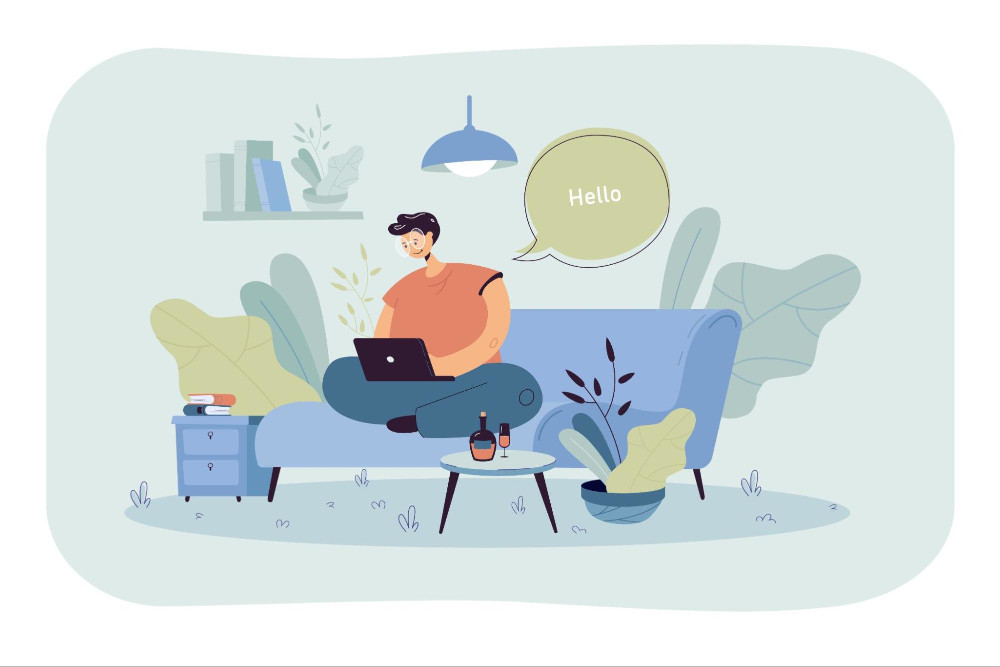
Flat Illustration (Beispiel 2)
Weiteres Beispiel derselben reduzierten, flächigen Bildsprache. (Quelle: 21-draw.com)
ic-01b-flat-illustration.jpg
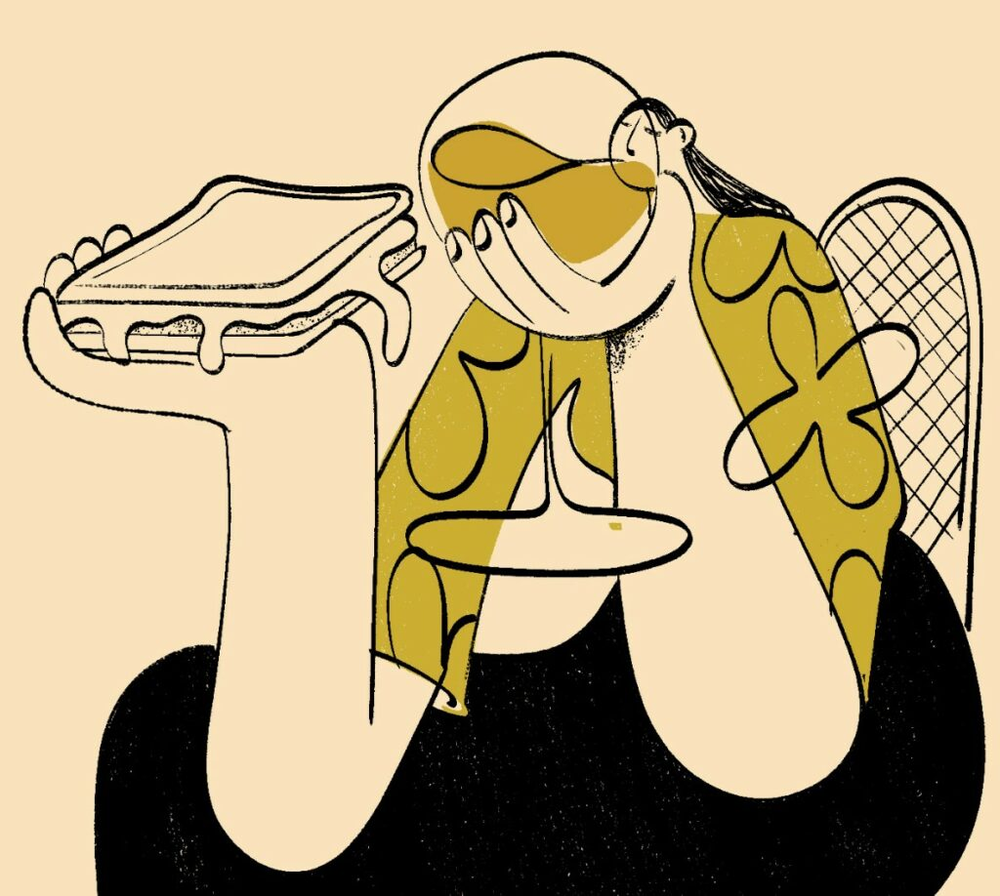
Line Art
Betont die Form über Details - reduzierte Linien, kaum Hintergrund, oft ganz ohne Farbe. (Quelle: doncorgi.com)
ic-02a-line-art.jpg

Line Art (Beispiel 2)
Weiteres Beispiel reiner Linienzeichnung ohne Farbfläche. (Quelle: 21-draw.com)
ic-02b-line-art.jpg

Cartoon Illustration
Einfache Formen mit spürbarer Übertreibung - kräftige Linien und meist kräftige Farben. (Quelle: doncorgi.com)
ic-03a-cartoon-illustration.jpg
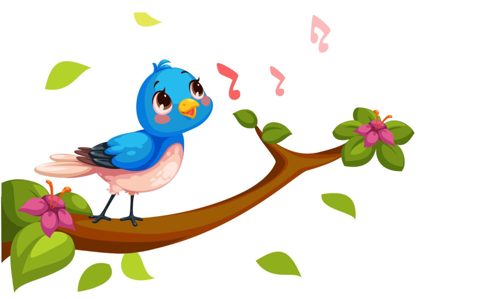
Cartoon Illustration (Beispiel 2)
Weiteres Beispiel derselben verspielt-übertriebenen Bildsprache. (Quelle: 21-draw.com)
ic-03b-cartoon-illustration.jpg

Minimalist Illustration
Wenige Elemente, viel Weißraum - Klarheit und Ruhe statt Detailfülle. (Quelle: doncorgi.com)
ic-04-minimalist-illustration.jpg

Fashion Illustration
Zeigt Kleidung und Accessoires - Modedesigner nutzen sie, um ihre Kollektionen zu präsentieren. (Quelle: doncorgi.com)
ic-05a-fashion-illustration.jpg

Fashion Illustration (Beispiel 2)
Weiteres Beispiel modischer Illustration mit elegant gestreckten Proportionen. (Quelle: 21-draw.com)
ic-05b-fashion-illustration.jpg
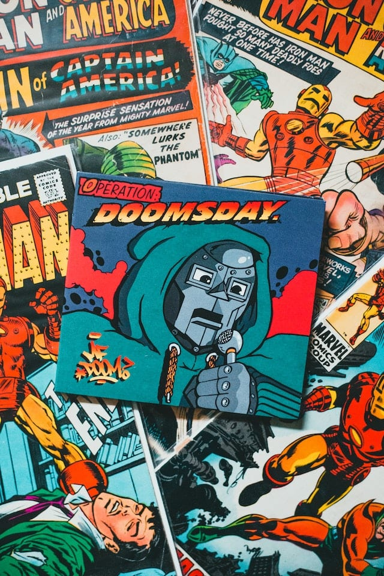
Comics / Graphic Novels
Lebendige, comichafte Bildsprache mit fantasievollen Geschichten - Sequenz über Einzelbild. (Quelle: doncorgi.com)
ic-06a-comics-graphic-novels.jpg
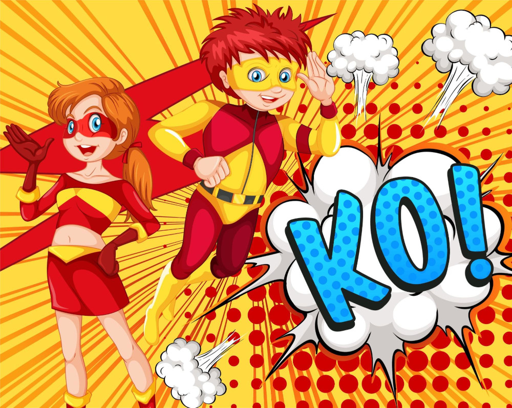
Comics / Graphic Novels (Beispiel 2)
Weiteres Beispiel sequenzieller Comic-Illustration. (Quelle: 21-draw.com)
ic-06b-comics-graphic-novels.jpg

Retro / Vintage Illustration
Greift Stile vergangener Jahrzehnte auf - alte Schriften, Muster und kräftige Linien für Nostalgie. (Quelle: doncorgi.com)
ic-07a-retro-vintage.jpeg

Retro / Vintage Illustration (Beispiel 2)
Weiteres Beispiel nostalgischer, vintage-anmutender Bildsprache. (Quelle: 21-draw.com)
ic-07b-retro-vintage.jpg
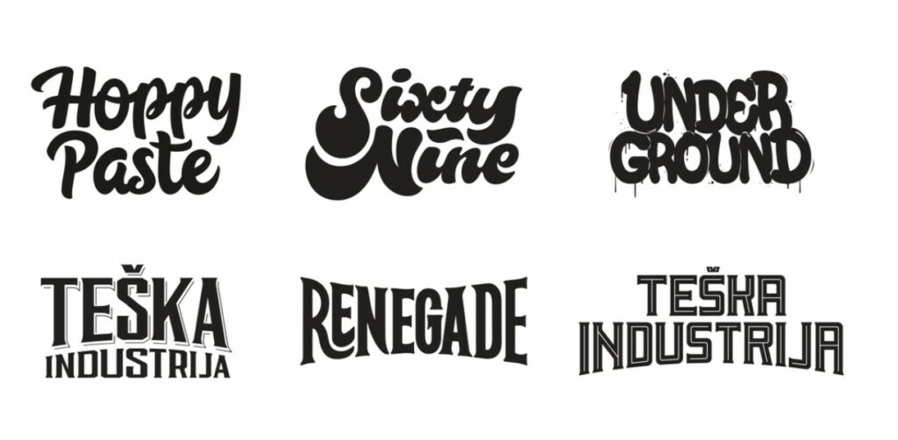
Typografie-Illustration
Text und Schriftarten selbst werden zur Komposition - einprägsam durch mutige Buchstabenformen. (Quelle: doncorgi.com)
ic-08-typography-illustration.jpg
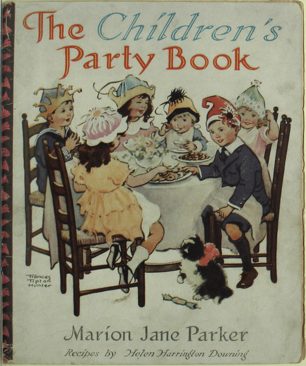
Kinderbuch-Illustration
Bunt und vereinfacht, speziell für junge Leser gemacht. (Quelle: doncorgi.com)
ic-09-childrens-book-illustration.png

Fantasy-Illustration
Stimmungsvoll und verzaubernd - Mythologie, Magie, Fabelwesen und übernatürliche Szenen. (Quelle: 21-draw.com)
ic-10-fantasy-illustration.jpg

Buchillustration
Bringt Geschichten durch Bilder zum Leben - hilft, den Text besser zu verstehen. (Quelle: 21-draw.com)
ic-11-book-illustration.jpg
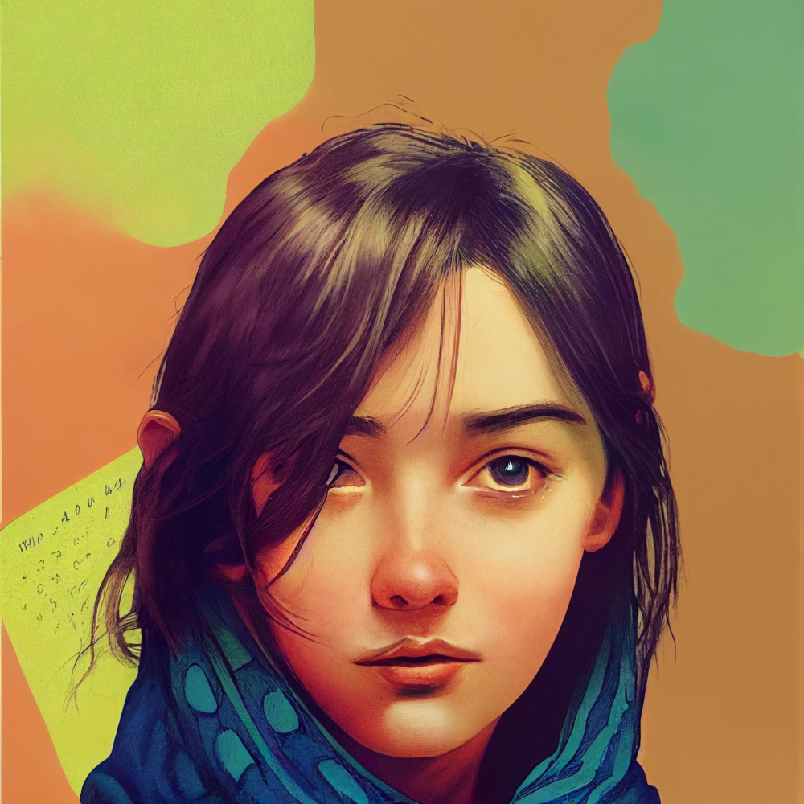
Realismus
Konzentriert sich auf die exakte Wiedergabe der realen Welt in Proportion, Textur und Licht. (Quelle: 21-draw.com)
ic-12-realism.jpg

Concept Art
Hält die prägenden Eigenschaften eines Designs fest und legt den visuellen Stil eines Projekts fest. (Quelle: 21-draw.com)
ic-13-concept-art.jpg
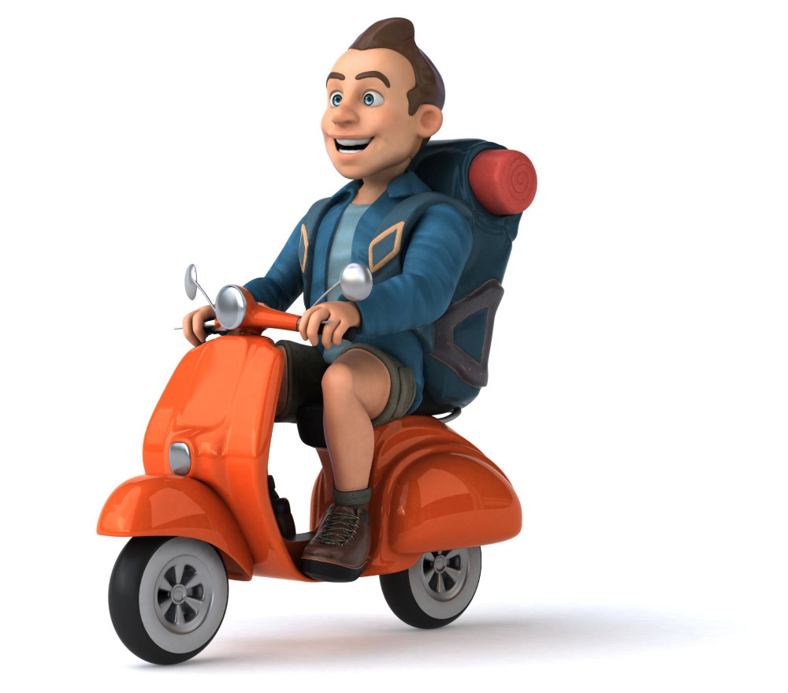
3D-Illustration
Erzeugt die Illusion von Tiefe und Volumen durch Licht, Schatten und Rendering-Techniken. (Quelle: 21-draw.com)
ic-14-3d-illustration.jpg
Cartoon-/Animationsstile (nach Figur/Serie)
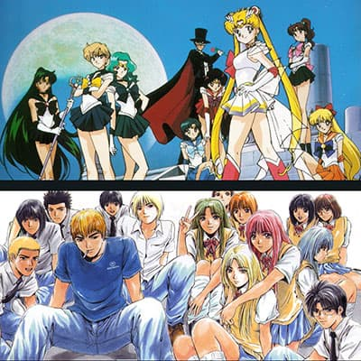
Classic Manga
Menschenähnliche Proportionen mit großen, ausdrucksstarken Augen - z. B. Sailor Moon, GTO.
cs-01-classic-manga.jpg
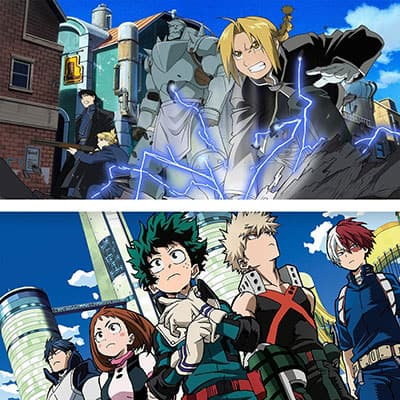
Modern Anime
Komplexer und dynamischer, besonders in Bewegungsszenen - z. B. Fullmetal Alchemist, My Hero Academia.
cs-02-modern-anime.jpg
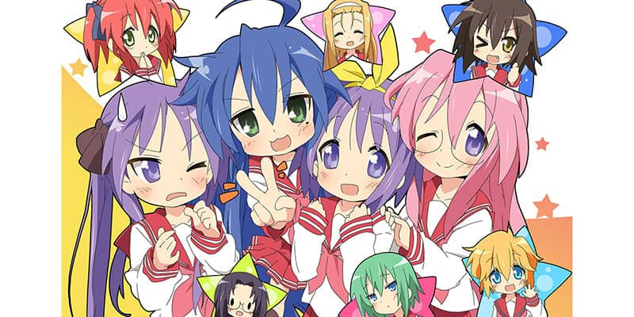
Chibi
Super-deformiert: kleiner Körper, großer Kopf - niedlich und verspielt.
cs-03-chibi.jpg

Tim Burton
Charakteristisch dunkel, aber voller Emotion - unverwechselbare, schlaksige Figuren.
cs-04-tim-burton.jpg

Die Simpsons
Gelbe Haut, große Augen - einer der bekanntesten Cartoon-Stile überhaupt.
cs-05-simpsons.jpg
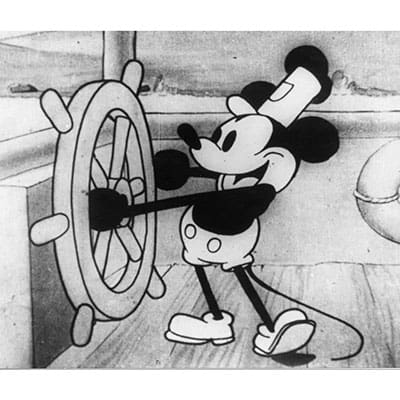
Classic Disney
Frühe Disney-Ära, z. B. Steamboat Willie - runde, simple Formen.
cs-06-classic-disney.jpg
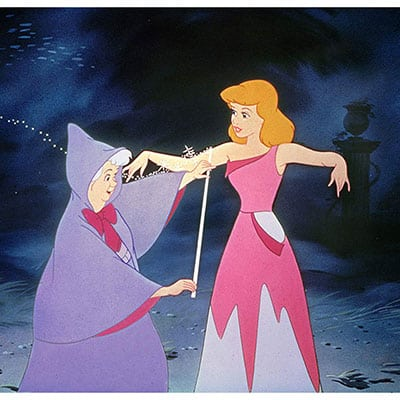
Disney (Mitte 20. Jh.)
Menschlicher wirkende Figuren, Arbeit mit Referenzaufnahmen von Schauspielern.
cs-07-mid-century-disney.jpg

Modern Disney
Kräftige Farben, z. B. Lilo & Stitch - direkte Weiterentwicklung des Mid-Century-Stils.
cs-08-modern-disney.jpg

Peanuts / Charlie Brown
Handgemacht und wackelig von Charles M. Schulz - vielfach kopiert, einzigartig.
cs-09-peanuts.jpg

South Park
Sehr geometrisch, kaum Schatten oder Highlights - bewusst flach.
cs-10-south-park.jpg

Dragon Ball / Akira Toriyama
Stark definierte Muskulatur, sofort wiedererkennbar.
cs-11-dragon-ball-toriyama.jpg
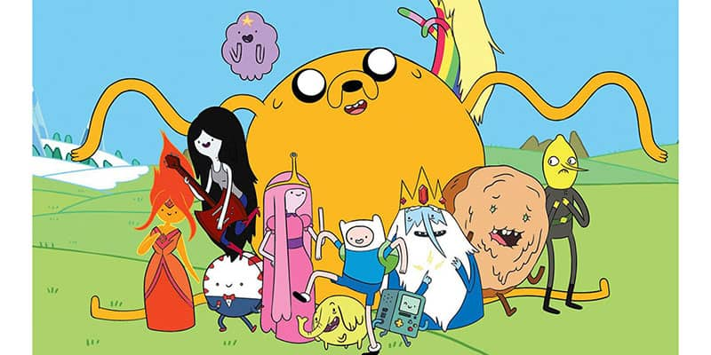
Adventure Time
Sehr geometrisch, die Figuren wirken fast „knochenlos“.
cs-12-adventure-time.jpg
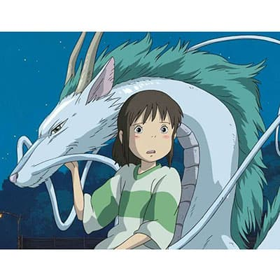
Hayao Miyazaki / Ghibli
Feine Linien, detailreich gebaute Figuren und Umgebungen - z. B. Chihiros Reise.
cs-13-miyazaki-ghibli.jpg
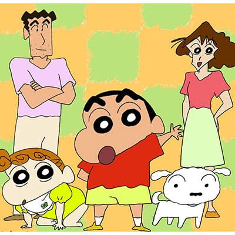
Crayon Shin-Chan
Bewusst simpel, wie mit Wachsmalstiften gezeichnet.
cs-14-crayon-shinchan.jpg
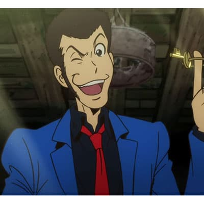
Lupin The 3rd
Über Jahrzehnte gewachsener Stil mit interessanter Entwicklung.
cs-15-lupin-the-3rd.jpg
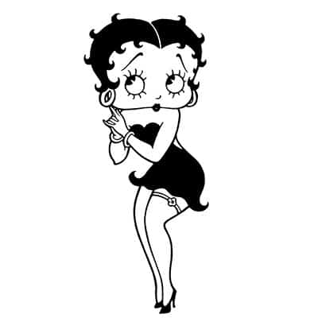
Betty Boop
Starker Schwarz-Weiß-Kontrast, weltbekannt geworden.
cs-16-betty-boop.jpg

Fist Of The North Star
Übermenschlich definierte Proportionen, sehr grungy im Original-Manga.
cs-17-fist-of-the-north-star.jpg

Berserk
Sehr dunkel und extrem detailliert.
cs-18-berserk.jpg
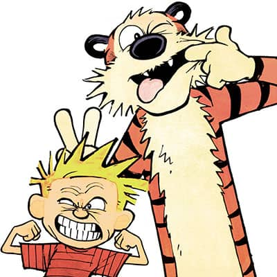
Calvin and Hobbes
Bill Wattersons Mix aus dünnen und mittleren Linien - schlicht und einzigartig.
cs-19-calvin-and-hobbes.jpg
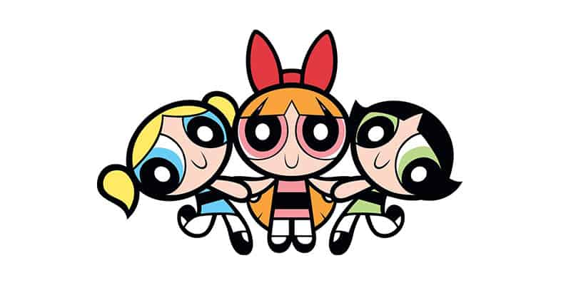
Powerpuff Girls
Sehr geometrisch, dicke Linien, farbenfroh.
cs-20-powerpuff-girls.jpg

Archer
Mix aus Vektorgrafik und Realismus - ungewöhnlich realistische Proportionen für einen Cartoon-Stil.
cs-21-archer.jpg
Karikatur-Künstler (historisch/international)

Al Hirschfeld
„Broadway's King of Caricature“ - elegante, fließende Schwarz-Weiß-Linienführung, berühmt für Theater- und Hollywood-Porträts.
ka-01-al-hirschfeld.jpg
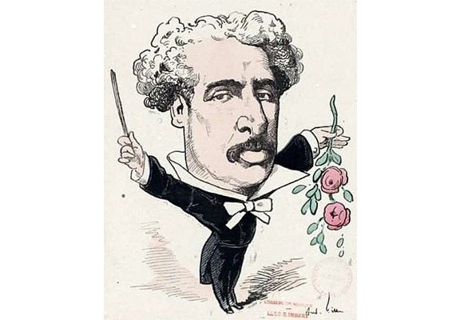
André Gill
Französischer Karikaturist des 19. Jahrhunderts, bekannt für bissige politische Satire gegen Napoleon III.
ka-02-andre-gill.jpg
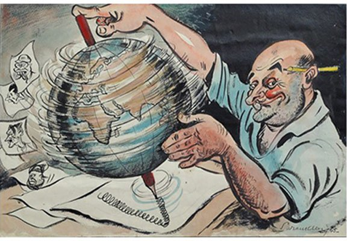
Alexander Saroukhan
Ägyptisch-armenischer Karikaturist, dessen Zeichnungen den Zweiten Weltkrieg vorwegnahmen.
ka-03-alexander-saroukhan.jpg

Boris Jefimowitsch Jefimow
Sowjetisch-russischer Karikaturist mit außergewöhnlich langer Karriere, politische Zeichnungen.
ka-04-boris-yefimov.jpg

Carlo Pellegrini
Italienisch-britischer Karikaturist („Ape“) - elegante viktorianische Gesellschaftskarikaturen für Vanity Fair.
ka-05-carlo-pellegrini.jpg
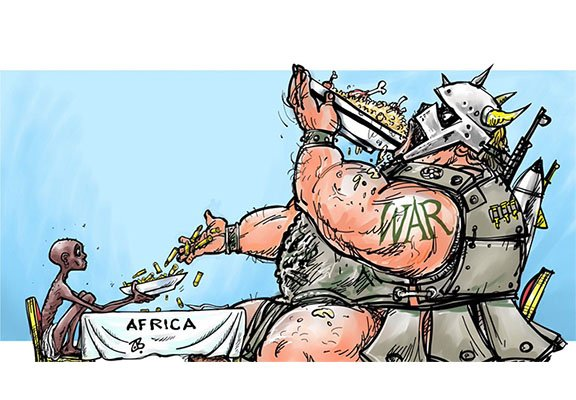
Emad & Osama Hajjaj
Jordanische Karikaturisten-Brüder, politische und gesellschaftliche Satire.
ka-06-hajjaj-brothers.jpg

Isaac Cruikshank
Schottischer Karikaturist des 18. Jahrhunderts, satirische Radierungen.
ka-07-isaac-cruikshank.jpg
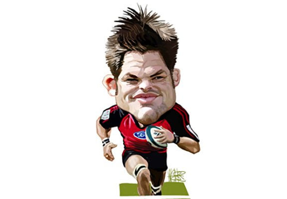
Murray George Webb
Neuseeländischer Karikaturist, Sport- und Politikkarikaturen.
ka-08-murray-george-webb.jpg
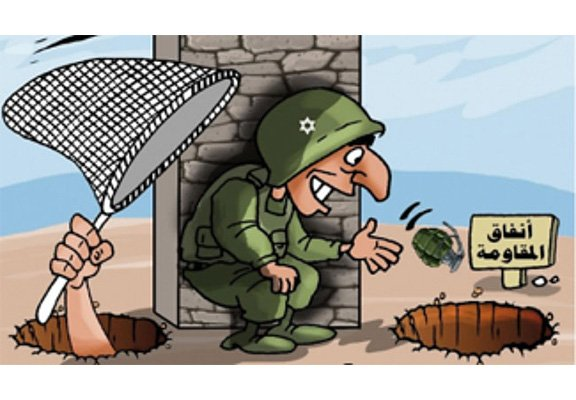
Omaya Joha
Palästinensische Karikaturistin, eine der ersten Frauen im Fach, politische Satire.
ka-09-omaya-joha.jpg
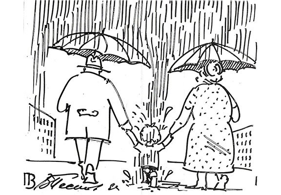
Vitaly Peskov
Russischer Karikaturist.
ka-10-vitaly-peskov.jpg

Margaret „Peggy“ Bacon
US-amerikanische Karikaturistin und Druckgrafikerin, satirische Porträts von Literaten und Künstlern.
ka-11-peggy-bacon.jpg
Karikatur-Genres/Techniken

Exaggerated
Die Grundform der Karikatur: markante Merkmale bewusst überzeichnet, ohne die Erkennbarkeit zu verlieren.
kg-01-exaggerated.png

Social Satire
Gesellschaftskritik durch Übertreibung - Zustände statt Einzelpersonen im Fokus.
kg-02-social-satire.png
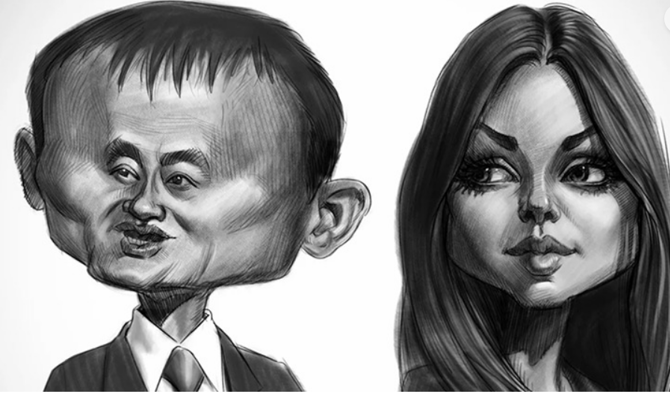
Digital Caricature
Am Tablet oder mit Software erstellt - moderne Werkzeuge, klassisches Prinzip.
kg-03-digital-caricature.png
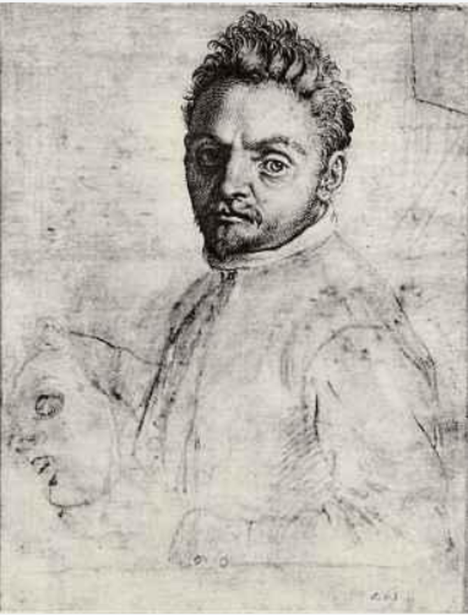
Portrait Caricature
Nah am echten Porträt, mit dezenten, gezielten Übertreibungen einzelner Züge.
kg-04-portrait-caricature.png

Caricature Sculpture
Dreidimensionale Karikatur - Übertreibung als Skulptur statt Zeichnung.
kg-05-caricature-sculpture.png
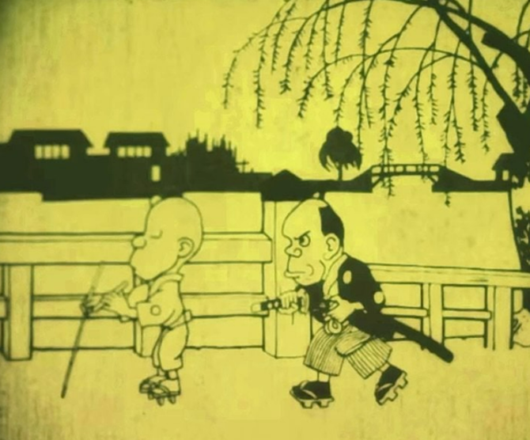
Anime / Manga Caricature
Karikatur im Anime-/Manga-Look - große Augen, stilisierte Gesichtszüge.
kg-06-anime-manga-caricature.png
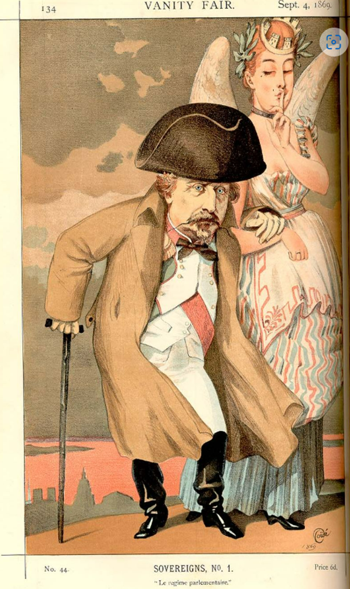
Celebrity Caricature
Prominente als Zielscheibe - Wiedererkennbarkeit trotz starker Verzerrung entscheidend.
kg-07-celebrity-caricature.png

Live Caricature
Schnelle Live-Zeichnung vor Ort, z. B. auf Jahrmärkten oder Events.
kg-08-live-caricature.png
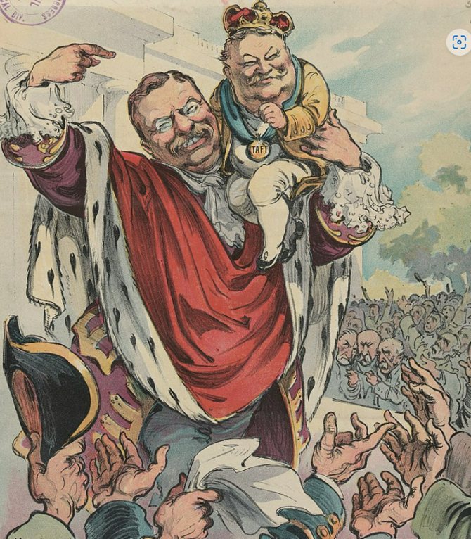
Editorial Caricature
Politische Karikatur für Zeitungen/Magazine - Kommentar zum Tagesgeschehen.
kg-09-editorial-caricature.png
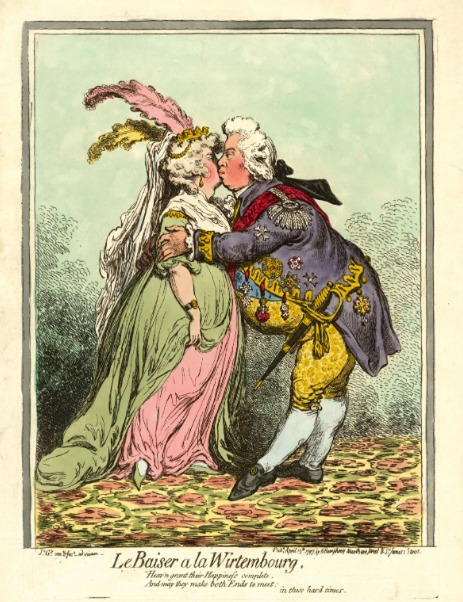
Cartoon Caricature
Karikatur im Cartoon-Look - verspielter und weniger streng als die klassische Portrait-Karikatur.
kg-10-cartoon-caricature.png